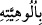

8. Biz, insana, ana-babasına iyi davranmasını tavsiye etmişizdir. Eğer onlar, seni,
hakkında bilgin olmayan bir şeyi (körü körüne) bana ortak koşman için zorlarlarsa,
onlara itâat etme. Dönüşünüz ancak banadır. O zaman size yapmış olduklarınızı
haber vereceğim.
“Biz, insana, ana-babasına iyi davranmasını tavsiye etmişizdir.” Onlara karşı
yumuşak davranmayı ve güzel muâmelede bulunmayı emrettik.
Çünkü “ fiili, mânâ ve tasarruf olarak “emretti” fiili yerinde kullanılır. Ancak
emrolunan şeyin faydası hem kendisine emredilene (memura) ve hem de başkasına
döner. Arapça’da “Amr’ı, Zeyd’e vasiyet ettim” demek, Amr’ı gözetip kollamasını ona
emrettim, demektir. Tavsiye, vasiyet anlamına da kullanılır.
Râğıb Isfahânî der ki: “vasiyet”; yapacağı şeyi başkasına tavsiye etmek, nasihat
ederek ondan yapmasını talep etmek, demektir.
Biz ona dedik ki: “Eğer onlar seni..”
Burada “Biz ona dedik ki...” cümlesi takdir edilmiştir. Şayet “vasiyet ettik”
cümlesinin mânâsı, “Ona dedik ki: Onlara iyilik yap” şeklinde olsaydı, burada “kavl”
maddesi takdir edilmezdi.
“Hakkında bilgin olmayan bir şeyi (körü körüne) bana ortak koşman için
zorlarlarsa” yâni Bana şirk ve ortak koşarsan ya da seninle savaşıp mücadele
ederlerse...
“” nin takdiri, “ (Allah’ın ulûhiyyeti konusunda...)” şeklindedir. Yâni muzaf
olan “ulûhiyet” kelimesi hazfedilmiş ve yerine muzâfun ileyh olan “hüve” zamiri
getirilmiştir.
Âyet-i kerimede “ilmin nefyi” (bilmediğin şey) ile “ilahlığın nefyi”nin (ilâhlığı
bilinmeyen şeyin) kasdedilmiş olması, doğruluğu bilinmeyen şeylere tâbi olmanın câiz
olmadığını haber vermek içindir. Bâtıl olduğu bilinmeyen durumlarda bu böyle iken,
bâtıl oluşu kesin olarak bilinenlere ittibâ etmek nasıldır?
“Onlara itâat etme.” Çünkü yaratana mâsiyet işlenen yerde mahlûka itâat edilmez.
Nitekim hadîs-i şerifte de böyle vârid olmuştur. Hoca ve kumandan da bu hükme
dâhildir. Cenâb-ı Hakk’ın reddettiği mâruf olmayan bir şeyin yapılmasını emrederlerse
onlara da bu konuda itâat edilmez.
Rivâyet edildiğine göre; Sa‘d b. Mâlik, – ki bu Sa‘d b. Ebî Vakkas (r.a.)’dır – ilk
müslüman olanlardandı (sâbikûn-i evvelûn). Müslüman olduğunda – ya da Tekmile’deki
rivâyete göre hicret edeceği sırada – annesi Hamne binti Ebî Süfyan b. Ümeyye ona:
“Ey Sa’d! Bu, yeni çıkardığın şey nedir? Dinini terk mi ettin?”; ya da “Güneşin
ışığından gölgeye geçmeyeceğim; ölünceye kadar yemeyeceğim ve içmeyeceğim. Sen de
benim yüzümden ayıplanacak ve: “Ey annesini öldüren adam!” diye çağrılacaksın”
dedi. Annesi dediği gibi üç gün bekledi; açlıktan dolayı yorgun ve halsiz düşmüştü.
Sa‘d: “Vallahi yüz canın olsa, hepsi teker teker çıksa, ben yine de küfre dönmem. Sen
ister ye, ister yeme” dedi.